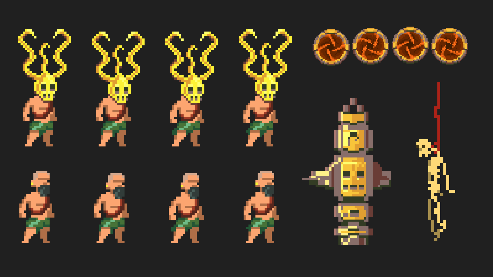

Creación de personaje y props con Aseprite
Creación en Aseprite de los sprites del personaje y los elementos del entorno. La paleta de color, las siluetas y los detalles en pixel art conectan al protagonista con los tótems y otros props de inspiración azteca.